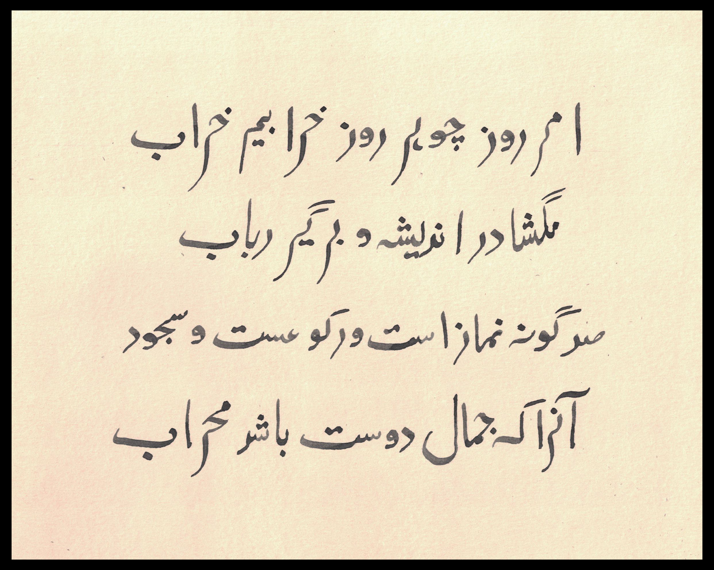
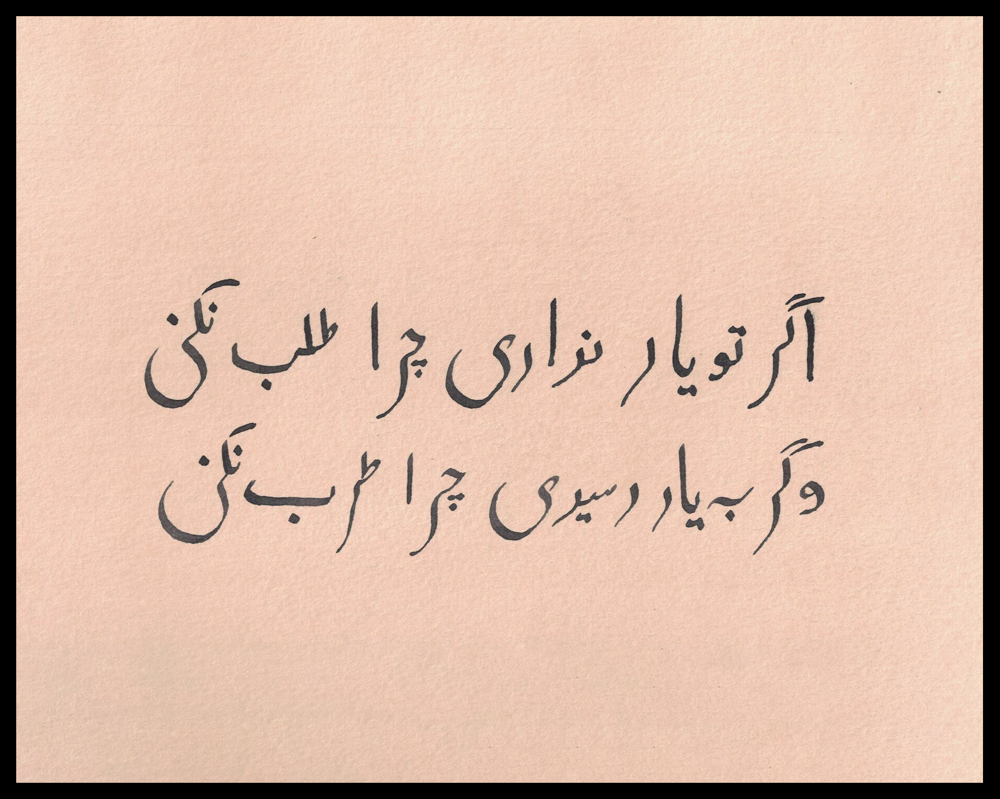
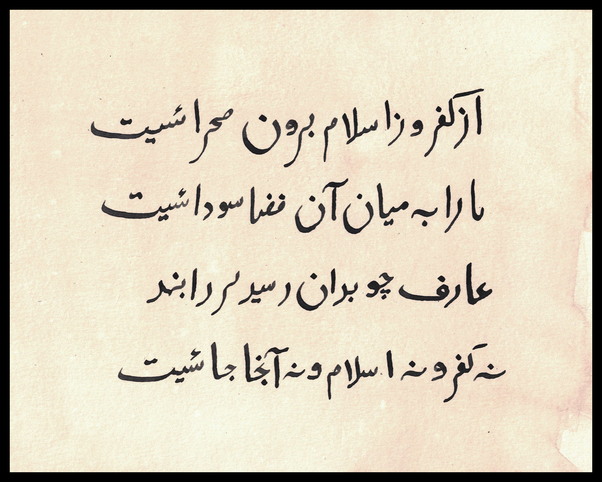

This website is about decolonising and reclaiming poetry by Rumi.
Jalaluddin Rumi was a 13th-century Persian poet, Islamic scholar and Sufi mystic. Rumi is one of the best selling poets in the US and his translated works are everywhere. It is undeniable that Rumi was a Muslim scholar and took Islam seriously, his works revolve aorund his love for God and his book "Masnavi" is the greatest example.
Until now any poetry you've seen by Rumi has been an interpretation of his poetry and is very far away from the essence of what Rumi was trying to convey.
Coleman Barks, the man who made his career translating Rumi's poetry, hadn't studied any of these subjects and couldn't read Persian.
Here are some accurate translations of his poetry:


